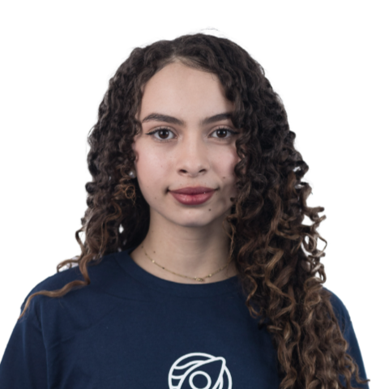

Prazer em Conhecer
Olá, meu nome é Mariana Paiva e sou residente da zona oeste de São Paulo. Sou uma pessoa curiosa e apaixonada por aprender, sempre aberta a novas experiências. Tenho um espírito alegre e gosto de compartilhar essa energia positiva com os outros. Atualmente, estou em busca de oportunidades como Desenvolvedora Mobile Júnior. Estou comprometida em aplicar meus conhecimentos para me destacar no mercado de tecnologia, criando projetos inovadores que possam fazer a diferença e atender às necessidades das pessoas em diversas áreas que requerem soluções eficazes.
Baixar o meu CVMapa de Carreira
Desenvolvimento Mobile
Desde que comecei minha jornada na programação, o mundo do desenvolvimento mobile sempre me fascinou. A capacidade de criar aplicativos que impactam a vida das pessoas, facilitando seu dia a dia e proporcionando experiências únicas, é o que me motiva a seguir em frente.
Soft Skills exigidas para essa carreira:
- Trabalho em equipe
- Resolução de Problemas.
- Comunicação para ser capaz de explicar ideias técnicas de forma clara e ouvir feedback de usuários e colegas.
- Adaptalidade para aprender novas tecnologias.
Roadmap de Aprendizado:
- Figma
- Kotlin
- Json
- MongoDB
Machine Learning
Ao longo dos anos, percebi que o aprendizado de máquina (machine learning) é uma das áreas mais promissoras e impactantes do mundo atual. Meu objetivo ao me aprofundar nesse campo é não apenas entender os fundamentos e as técnicas por trás dos algoritmos, mas também aplicá-los de maneira prática para resolver problemas reais.
Soft Skills exigidas para essa carreira:
- Comunicação para explicar conceitos complexos para equipes não técnicas.
- Trabalho em equipe.
- Pensamento crítico para avaliar dados, modelos e resultados de forma crítica para tomada de decisões.
- Resolução de problemas.
- Adaptalidade para aprender novas tecnologias.
Roadmap de Aprendizado:
- Python
- TensorFlow/PyTorch
- Scikit-learn
- Jupyter Notebook
Analista de dados
Meu interesse por análise de dados começou com a curiosidade em entender como as informações podem influenciar decisões estratégicas. Estou motivado a aprender a extrair, analisar e interpretar dados para fornecer recomendações que ajudem empresas a crescer e a inovar.
Soft Skills exigidas para essa carreira:
- Comunicação para explicar insights e análises de forma clara e acessível, tanto para equipes técnicas quanto não técnicas.
- Pensamento crítico para avaliar dados de maneira crítica para identificar padrões, tendências e anomalias relevantes.
- Resolução de problemas.
- Trabalho em equipe.
Roadmap de Aprendizado:
- Python
- SQL
- Tableau
- Power BI
- Jupyter Notebook
Data Science
Estou determinada a me tornar uma cientista de dados, uma profissão que integra análise, programação e estatística para transformar dados em decisões informadas. Meu objetivo é dominar algoritmos de machine learning e ferramentas de visualização para identificar padrões em conjuntos de dados complexos. Quero aplicar essas habilidades em setores impactantes, como saúde e sustentabilidade, ajudando organizações a tomar decisões baseadas em evidências e a otimizar processos.
Soft Skills exigidas para essa carreira:
- Comunicação para habilidade de traduzir resultados complexos em insights claros e compreensíveis.
- Colaboração para trabalhar em equipes.
- Pensamento crítico.
- Resolução de problemas para identificar e resolver desafios complexos, usando dados para apoiar decisões estratégicas.
Roadmap de Aprendizado:
- Python
- R
- Jupyter Notebook
- Tableau
- SQL
Soft e Hard Skills
Afinidade com as seguintes tecnologias e técnicas:
Frontend
-
Figma
-
Kotlin
-
Json
-
MongoDB
Backend
Outras
- DevOps
- Code Review
- Git
- Unit Testing
- Wireframing
- Balsamiq
- Android Studio
Idiomas
- Português (Nativo)
- Inglês (Básico)